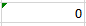
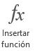

Semana 2
Cuando introducimos una fórmula en una celda puede ocurrir que se produzca un error. Dependiendo del tipo de error puede que Excel nos avise o no. Podemos detectar un error sin que nos avise cuando aparece la celda con un símbolo en la esquina superior izquierda tal como esta 
Al hacer clic sobre el símbolo aparecerá un cuadro como información error que nos permitirá saber más sobre el error:

Dependiendo del tipo de error, al hacer clic sobre el cuadro anterior se mostrará un cuadro u otro, a veces el error sea simplemente que la fórmula de la celda no tiene el mismo aspecto que todas las demás fórmulas adyacente (por ejemplo, ésta sea una resta y todas las demás sumas).
Si no sabemos qué hacer, disponemos de la opción Ayuda sobre este error. Si lo que queremos es comprobar la fórmula para saber si hay que modificarla o no, podríamos utilizar la opción Modificar en la barra de fórmulas. Si la fórmula es correcta, se utilizará la opción Omitir error para que desaparezca el símbolo de la esquina de la celda.
Puede que al introducir la fórmula nos aparezca como contenido de la celda #texto, siendo texto un valor que puede cambiar dependiendo del tipo de error. Por ejemplo: En ocasiones, podemos equivocarnos al ingresar manualmente el nombre de una función. En estos casos, al intentar aceptar la función para ver el resultado veremos que Excel nos muestra el error #¡Nombre!. De esta manera, podemos situarnos en la barra de fórmulas o presionar la tecla F2 para editarlo. Si cometemos un error al ingresar una fórmula, Excel nos devuelve un texto que informa su tipo, entre los que se encuentran:
| Error | Descripción | Ejemplos |
|---|---|---|
| #¡VALOR! | Ocurre cuando se utiliza un tipo de dato inesperado | = A1+"Texto" (al intentar sumar un número y texto) |
| #¡REF! | Se produce cuando una fórmula contiene una referencia inválida | = SUMA(A1:A10) (si se elimina la celda A5) |
| #¡DIV/0! | Indica una división por cero | = A1/0 |
| #¿NOMBRE? | Ocurre cuando se hace referencia a un nombre no válido | = Suma(A1:A10) (si "Suma" no está definido como un nombre) |
| #¡NUM! | Se produce cuando se realiza una operación numérica no válida | = RAIZ(-1) (calculando la raíz cuadrada de un número negativo) |
¿Qué es una función?
Las funciones son fórmulas predefinidas que utilizan valores en una estructura u orden específico para realizar cálculos, y devuelven un resultado. Los valores reciben el nombre de argumentos, y el orden o estructura es la sintaxis de la función.
-
Los argumentos pueden ser números, texto, referencias a celdas, valores constantes, fórmulas u otras funciones.
-
La sintaxis de una función debe contener los siguientes elementos y en el orden que detallamos:
signo igual $(=)$
El nombre de la función.
Paréntesis de apertura.
Los argumentos separados por coma $(,)$.
Paréntesis de cierre.
Cualquiera que sea la función que utilicemos, esta siempre deberá respetar la siguiente estructura:
= Nombre_funcion ( argumento1 , argumento2, ... )
Distintas formas de insertar funciones
En Excel podemos insertar funciones de diferentes maneras. Veremos cuáles son las posibilidades y analizaremos las características y las ventajas de cada una.
Desde la celda
Esta es la opción más rápida para crear una función, pero también la que requiere un poco más de experiencia de nuestra parte.
Para escribir directamente la función, debemos hacer un clic en la celda donde queremos insertarla, ingresar el signo igual $(=)$ desde el teclado y, a continuación, el nombre de la función. Al ingresar la primera letra del nombre de la función, aparecerá un asistente con el listado de las funciones que comienzan con esa letra. Si hacemos un clic sobre el nombre de alguna de estas funciones, veremos un pequeño cuadro que nos indicará qué operación realiza. Para elegir una función, debemos hacer doble clic sobre ella. Una vez que la seleccionamos, en la celda, a continuación del nombre, aparecerá un paréntesis de apertura y una indicación de los argumentos que necesita la función. Seleccionamos el rango de celdas para completar los argumentos y pulsamos ENTER.
Barra de fórmulas
Primero debemos seleccionar la celda donde queremos ingresar la función, luego hacemos un clic en el símbolo de Insertar función  de la Barra de fórmulas. Se abrirá la ventana Insertar función, que nos guiara en la construcción de la función.
Biblioteca de funciones
Desde la ficha Fórmulas de la cinta de opciones, accedemos al grupo Biblioteca de funciones. Aquí podemos utilizar el botón Insertar función, que abrirá lla ventana Insertar función, que nos guiará en la construcción de la función o bien desplegar los botones de cada categoría, seleccionar la función que buscamos y luego, completar los argumentos requeridos dentro de la ventana Argumentos de función.
Botón Autosuma
Se encuentra en el grupo Modificar de la ficha Inicio. Si lo pulsamos directamente, inserta la función SUMA, pero si hacemos un clic en la flecha de la derecha para desplegar el menú, podemos elegir otras funciones, como PROMEDIO, CONTAR, MAX y MIN, o también acceder a la ventana Insertar función, si seleccionamos la opción Más funciones....
Ventana insertar función
En la ventana Insertar función, se encuentra el asistente que nos guiará en el proceso de creación de la sintaxis de la función.
Veamos las opciones que ofrece esta ventana:
Buscar una función:
En este cuadro podemos escribir el nombre de la función o una breve descripción del cálculo que queremos hacer, y luego, pulsamos el botón Ir. En el cuadro Seleccionar una función aparecerán listadas todas las funciones relacionas con la descripción que hemos ingresado.Seleccionar una categoría:
Si conocemos la categoría a la que pertenece la función que buscamos, podemos desplegar el menú de esta sección y seleccionarla. A continuación, en el cuadro Seleccionar una función aparecerá el listado de las funciones que pertenecen a la categoría elegida. Si seleccionamos la categoría Todo, en el listado figurarán todas las funciones que posee Excel. Si elegimos Usadas recientemente, accederemos a las últimas funciones utilizadas.Seleccionar una función:
En este sector podemos desplazarnos mediante la barra derecha para buscar la función. Si seleccionamos cualquiera de las funciones, debajo aparecerá su descripción y sintaxis.
Una vez que elegimos la función, pulsamos Aceptar y se abrirá la ventana Argumentos de función, que nos indicará la cantidad y el tipo de argumentos requeridos. Aquí podremos ingresar un valor, una referencia de celda o minimizar la ventana y directamente seleccionar la celda o el rango en la hoja de cálculo.
En la celda donde comenzamos el proceso para insertar la función aparecerá el resultado, y si nos colocamos en ella, podremos ver la sintaxis de la función en la Barra de fórmulas.
Luego de hacer una introducción en el concepto de función, veremos cómo trabajar con algunas funciones sencillas para entender de manera más clara su lógica y aplicación. Antes de ponerlas en práctica, repasaremos algunos conceptos.
Ejemplo
Si queremos sumar los valores de las celdas C3 hasta C8, podemos escribir la siguiente fórmula usando el operador suma $+$:
= C3 + C4 + C5 + C6 + C7 + C8
También es posible usar la función SUMA y, como único argumento, ingresar el rango que queremos sumar:
= SUMA(C3:C8)
Con ambas fórmulas llegamos al mismo resultado, pero resulta mucho más sencillo y rápido utilizar la última.
La función SUMA suma el valor de todos los argumentos ingresados. Estos argumentos pueden ser:
Valores numéricos:
=SUMA(13,26)Referencias de celda:
=SUMA(A2,B2,C2)Rangos:
=SUMA(A1:C3,B2:B4)Otras funciones:
=SUMA(MAX(A2:A4), MIN(A2:A4)Una combinación de todo lo anterior
De manera análoga, la función PROMEDIO calcula el promedio aritmético de todos los argumentos. La función MAX devuelve el valor más alto de todos los argumentos y MIN devuelve el menor valor.
Observación
Si una función requiere dos o más argumentos, los ingresamos separándolos con coma $(,)$. El número de argumentos varía para cada función. Incluso, hay algunas que no requieren ningún argumento, sin que deje de ser obligatorio para estas el uso de paréntesis.
Los operadores especifican el tipo de cálculo que desea realizar en los elementos de una fórmula, como suma, resta, multiplicación o división
Existen cuatro tipos de operadores de cálculo: aritmético, comparación, concatenación de texto y referencia.
Operadores aritméticos
Para realizar operaciones matemáticas básicas como suma, resta o multiplicación (o para combinar números) y generar resultados numéricos, use los operadores aritméticos de esta tabla.
| Operador aritmético | Significado | Ejemplo |
|---|---|---|
| + |
Suma |
= 3+3 |
| – |
Resta |
= 3–1 |
| * |
Multiplicación |
= 3*3 |
| / |
División |
= 3/3 |
| % |
Porcentaje |
= 20 % |
| ^ |
Exponenciación |
= 2^3 |
Operadores de comparación
Con los operadores de la tabla siguiente, puede comparar dos valores. Cuando se comparan dos valores mediante estos operadores, el resultado es un valor lógico, ya sea VERDADERO o FALSO.
| Operador de comparación | Significado | Ejemplo |
|---|---|---|
| = |
Igual a |
= A1= B1 |
| > |
Mayor que |
= A1 >B1 |
| < |
Menor que |
= A1 < B1 |
| >= |
Mayor o igual que |
= A1 >= B1 |
| <= |
Menor o igual que |
= A1 <= B1 |
| ≠ |
No es igual a |
= A1 < > B1 |
Operadores de concatenación de texto
Use el símbolo $\&$ para unir o concatenar una o más cadenas de texto para generar un único fragmento de texto.
| Operador de texto | Significado | Ejemplo |
|---|---|---|
| $\mathrm{\&}$ |
Concatena dos cadenas de texto para generar un cadena de texto continuo. |
="Administración" $\&$ "Turística" |
Operadores de referencia
Combine rangos de celdas para los cálculos con estos operadores.
| Operador de referencia | Significado | Ejemplo |
|---|---|---|
| : |
Operador de rango, que genera una referencia a todas las celdas entre dos referencias, estas incluidas |
=SUMA(B5:B15) |
| , |
Operador de unión, que combina varias referencias en una sola. |
=SUMA(B5:B15,D5:D15) |
| (espacio) |
Operador de intersección, que genera una referencia a las celdas comunes a las dos referencias. |
=SUMA(B7:D7 C6:C8) |
| # |
El símbolo # se usa en varios contextos:
|
|
Jerarquía de operaciones en Excel
Las fórmulas de Excel siempre comienzan por un signo igual $(=)$. El signo igual indica a Excel que los caracteres siguientes constituyen una fórmula. Después de este signo igual, puede haber una serie de elementos que se van a calcular (los operandos), que están separados por operadores de cálculo. Excel calcula la fórmula de izquierda a derecha, según el orden específico de cada operador de la fórmula. Si una fórmula contiene operadores con la misma prioridad (por ejemplo, si una fórmula contiene un operador de multiplicación y otro de división), Excel evaluará los operadores de izquierda a derecha. Excel ejecutará las operaciones en el orden que se indica en la siguiente tabla.
| Operador | Descripción |
|---|---|
|
: espacio , |
Operadores de referencia |
| – |
Negación (como en –1) |
| % |
Porcentaje |
| ^ |
Potencias (y raices) |
| *, / |
Multiplicación y división |
| +, - |
Suma y resta |
| $\mathrm{\&}$ |
Concatenación de cadenas de texto |
|
= < , > < = >= < > |
Operadores de comparación |
Uso de paréntesis
En algunos casos, el orden en el que se realiza el cálculo puede afectar al valor devuelto de la fórmula, por lo que es importante comprender el orden y cómo puede cambiar el orden para obtener los resultados que espera ver. Para cambiar el orden de evaluación, escriba entre paréntesis la parte de la fórmula que se calculará en primer lugar.
Ejemplo
La siguiente fórmula da como resultado el valor de $11$, porque Excel calcula la multiplicación antes que la suma. La fórmula multiplica primero $2$ por $3$ y después suma $5$ al resultado.
$=5+2*3$
Por el contrario, si usa paréntesis para cambiar la sintaxis, Excel suma $5$ y $2$ y, a continuación, multiplica el resultado por $3$ para producir $21$.
$=(5+2)*3$
Ejemplo
Los paréntesis que encierran la primera parte de la fórmula obligarán a Excel a calcular $\mathrm{B4+25}$ en primer lugar y, a continuación, dividirá el resultado por la suma de los valores de las celdas $\mathrm{D5, E5}$ y $\mathrm{F5}.$
=(B4+25)/SUMA(D5:F5)
Observaciones
Al escribir una fórmula directamente en una celda, Excel espera tipos específicos de valores para cada operador. Si escribe un tipo de valor diferente del esperado, Excel puede convertir el valor de las fórmulas de la siguiente manera:
| Fórmula | Explicación | Resultado |
|---|---|---|
| = "1" + "2" |
Al usar un signo más (+), Excel espera números en la fórmula. Aunque las comillas significan que "1" y "2" son valores de texto, Excel convierte automáticamente los valores de texto en números. |
3 |
| = 1 +"4.00" |
Cuando una fórmula espera un número, Excel convierte texto si está en un formato que normalmente se aceptaría para un número. |
5 |
| = "1/6/2001"-"1/5/2001" |
Excel interpreta el texto como una fecha en formato mm/dd/aaaa, convierte las fechas en números de serie y luego calcula la diferencia entre ellas. |
31 |
| = RAIZ ("8+1") |
Excel no se puede convertir el texto en un número porque el texto "8+1" no se puede convertir en número. Puede usar "9" o "8"+"1" en lugar de "8+1" para convertir el texto en un número y devolver el resultado de 3. |
#¡VALOR! |
| = "A" $\mathrm{\&}$ VERDADERO |
Cuando se espera texto, Excel convierte números y valores lógicos como VERDADERO y FALSO en texto. |
VERDADERO |